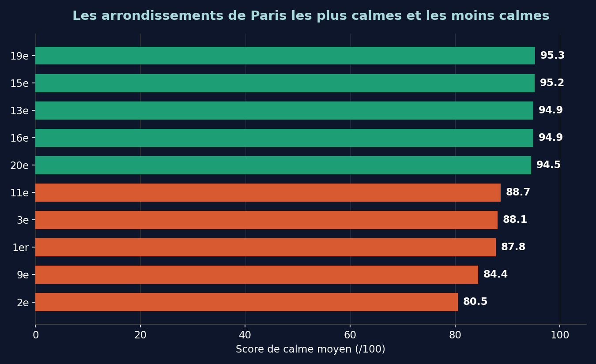

Après avoir calculé le score de calme de 4 000 rues et 700 parcs parisiens, une question naturelle s'est posée : et si on regardait à l'échelle de l'arrondissement ? En faisant la moyenne des scores de chaque arrondissement, un classement se dessine — cohérent avec ce qu'on pourrait imaginer de Paris, mais chiffré cette fois.
Le podium du calme
- 1. 19ᵉ arrondissement95,3/100
- 2. 15ᵉ arrondissement95,2/100
- 3. 13ᵉ arrondissement94,9/100
Les moins calmes
- 20. 2ᵉ arrondissement80,5/100
- 19. 9ᵉ arrondissement84,4/100
- 18. 1ᵉʳ arrondissement87,8/100
Pourquoi ces résultats ?
Rien de surprenant en creusant : le 2ᵉ arrondissement (Sentier, Bourse) est un quartier historiquement dense et commerçant, avec de petites rues étroites très fréquentées. Le 9ᵉ (Opéra, Grands Boulevards) concentre une intense vie nocturne. Le 1ᵃ (Louvre, Châtelet) est l'un des cœurs touristiques et routiers les plus centraux de la capitale.
À l'inverse, les arrondissements en tête (19ᵉ, 15ᵉ, 13ᵉ, 16ᵉ, 20ᵉ) sont généralement plus résidentiels ou plus excentrés — moins de grands axes de circulation à trafic intense, plus d'espaces verts.
Comment ce classement est calculé
Chaque arrondissement obtient la moyenne des scores de calme de ses rues et de ses parcs/jardins, eux-mêmes calculés à partir de 5 facteurs : bruit routier et ferroviaire (Bruitparif), effet de bordure aux zones bruyantes, vie nocturne pondérée (OpenStreetMap), taux de végétation (photo aérienne, Ville de Paris), et présence de marchés découverts. Aucune opinion, aucun sondage — uniquement des données publiques ouvertes.
Une limite à connaître : une moyenne par arrondissement lisse forcément les écarts internes. Un arrondissement globalement calme peut avoir une rue ponctuellement bruyante, et inversement. Pour le détail rue par rue, direction la carte interactive.
Voir le classement complet et chercher votre rue
AuKLM est un projet citoyen indépendant, gratuit et sans publicité. Sources : Bruitparif, OpenStreetMap, Ville de Paris/Paris Data — toutes sous licence ouverte.